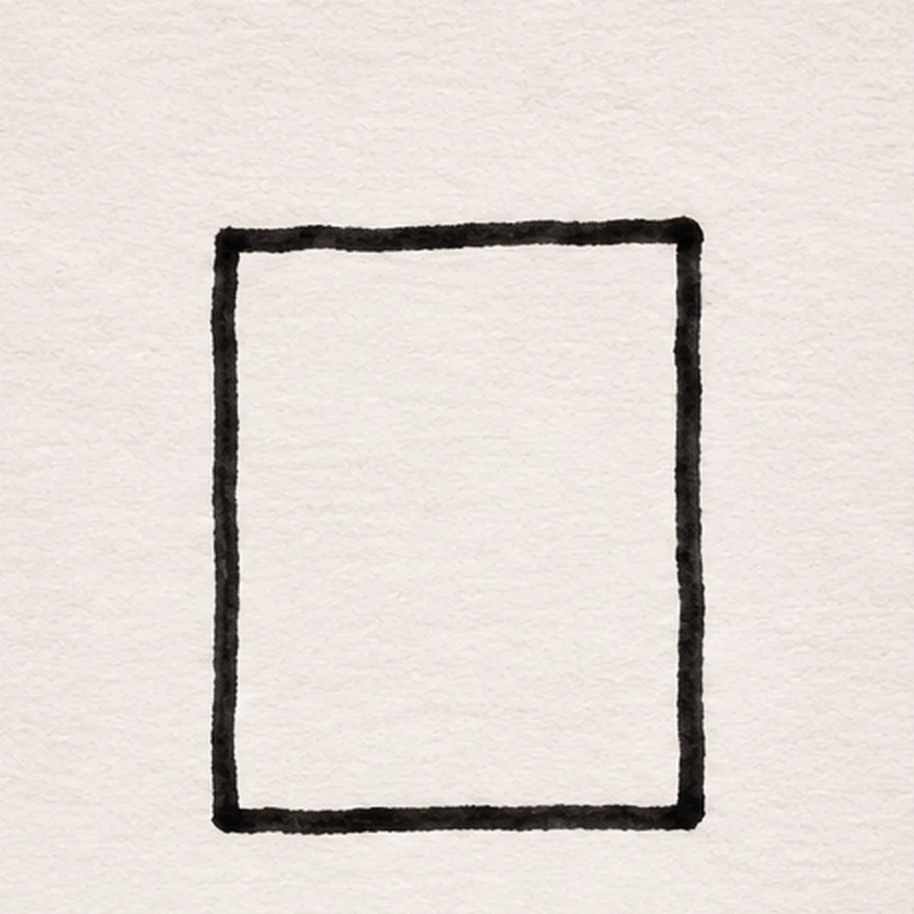
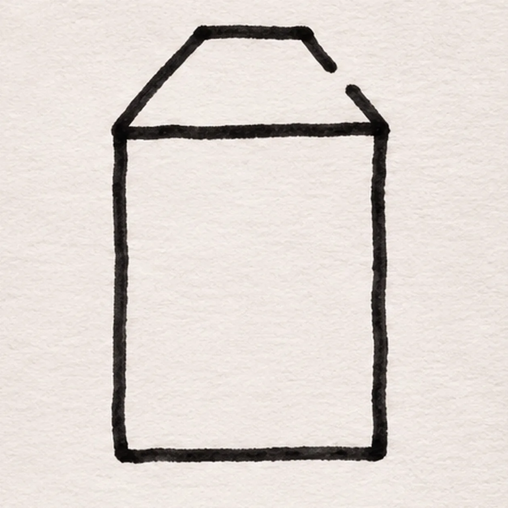
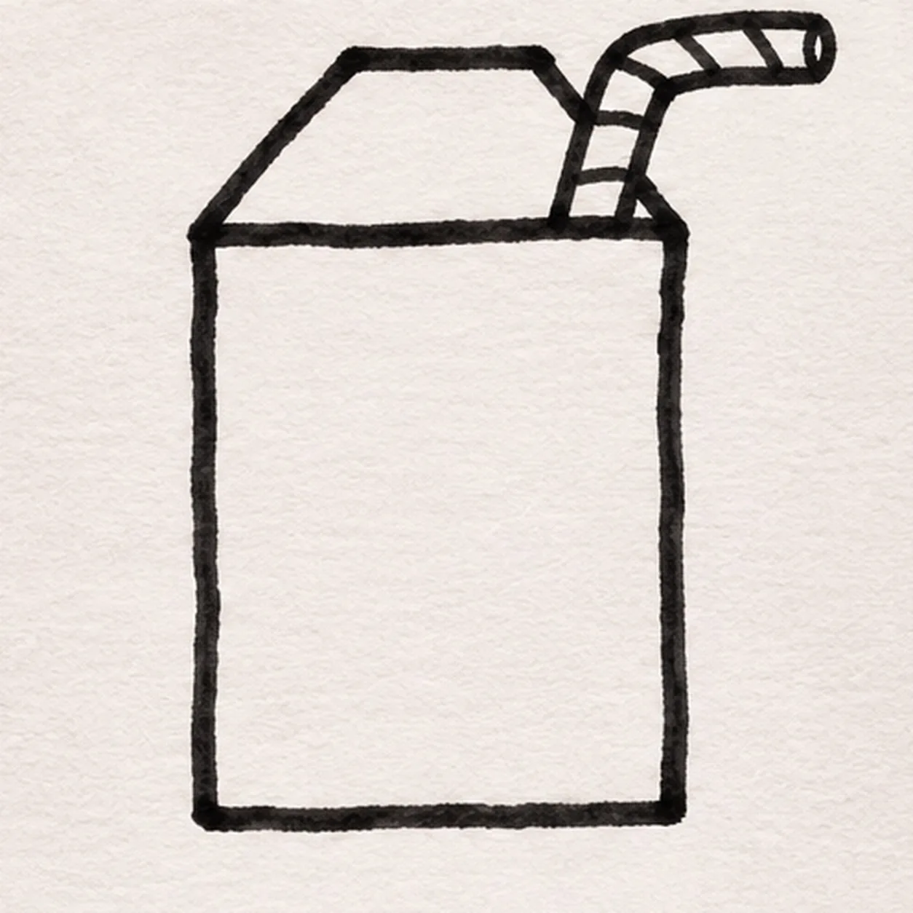
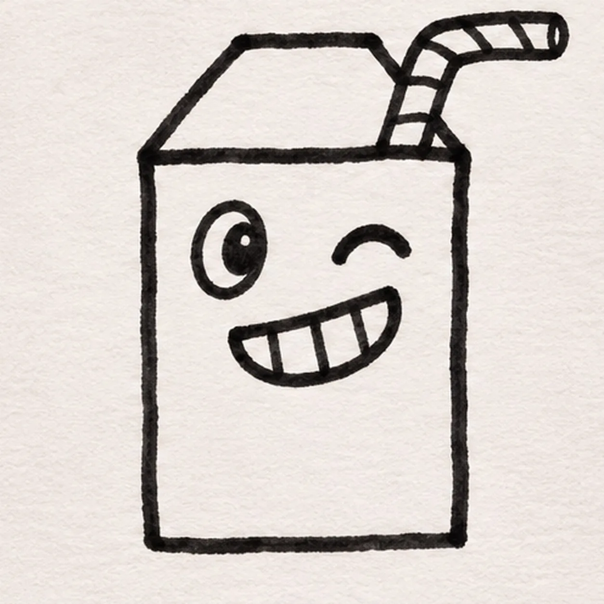
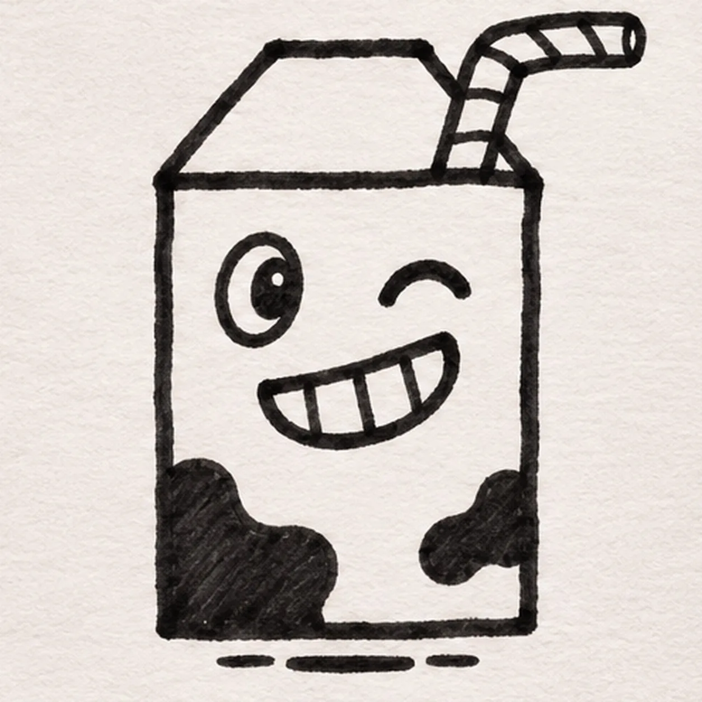

Felt-tip marker mode
Let's draw a milk carton
Treat this as one playful practice round: sketch the idea loosely, simplify the shapes, then commit with confident marker outlines and bright fills.
-
01

Draw the carton body
With black felt tip, draw a tall upright rectangle near the center. Make its side lines slightly handmade and close both the top and base; the roof will sit above this front panel.
Marker tip: Keep the front broad enough for the face and two lower patches.
-
02

Fold the gable top
From the left top corner, slope up to a short flat ridge. Descend toward the right top corner but leave a small break on the upper-right slope for the straw; continue the same slope after the break. Keep the body’s top edge visible below the roof.
Marker tip: Leave a visible gap in the right roof slope; the straw fills it in the next step.
-
03

Bend the straw
Join two parallel straw edges to the reserved break in the upper-right roof slope. Raise them, bend both toward the right, and close the tip. Divide the bent tube with short diagonal stripe marks; keep all earlier roof segments.
Marker tip: Touch both straw edges to the reserved roof gap without drawing over earlier lines.
-
04

Give the carton a cheeky face
On the upper front panel, draw one open oval eye on the left and one thick curved wink on the right. Below them, draw a tilted open grin and divide its white interior into four tooth sections with three short black bars.
Marker tip: Count four white tooth sections between three dark separators.
-
05

Add patches and a shadow
In the lower half of the front panel, draw two separate uneven cow patches without touching the grin. Sketch one short broken ground shadow just under the base.
Marker tip: Place one larger left patch and one smaller right patch before adding the broken shadow.
-
06
Color the cheeky carton
After the black outlines dry, fill the established front panel with streaky pale aqua, the roof with coral and the bent straw yellow. Fill both cow patches deep navy; keep the oval eye and four tooth sections white and preserve the wink and ground shadow.
Marker tip: Pull broad marker strokes inside each established area and keep the eye and four teeth white.